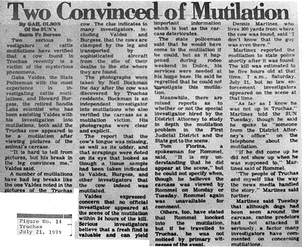
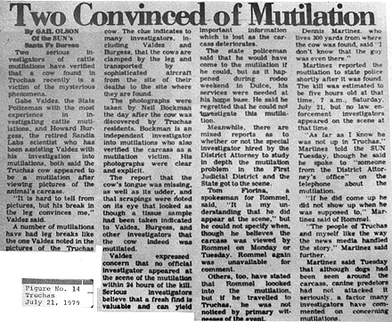
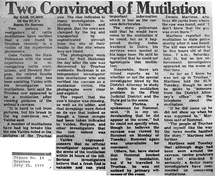

La Police d'Etat du Nouveau Mexique m'informa qu'une mutilation avait été signalée dans la région de Truchas le juillet. Selon le rapport, vers ce matin-là, alors qu'il marchait le long de la clôture de sa propriété, un homme découvrit une vache morte. En y regardant de plus près, l'animal paraissait avoir été mutilé, ses mamelles, anus et langues étant manquants. Ne sachant pas à qui était l'animal, le résident signala l'incident à la police et alerta aussi plusieurs voisins ainsi que sa femme et son fils, qui photographia par la suite la carcasse.
Je fus amené à faire 2 enquêtes sur site — une le juillet, accompagné du propriétaire de la propriété et sa femme, et l'autre le juillet, accompagné de Henry J. Guillen, inspecteur du Comité du Bétail du Nouveau Mexique, et Cipriano Padilla, enquêteur du procureur du district. Lors de ces 2 enquêtes, je recueillis une quantité considérable d'éléments indiquant tous que l'animal était mort de causes naturelles et avait été endommagé par des charognards par la suite.
L'enquête sur place montra clairement que l'animal avait été affligé de diarrhées sérieuses avant sa mort. En fait, la victime avait laissé une traînée d'empreintes de sabots et de diarrhée, qui couraient sur à peu près 100 yards le long d'une clôture en fil de fer dans un autre pâturage où poussaient du chêne brosse, du lupin et du pied-d'alouette. L'ensemble de ces 3 plantes sont très toxiques pour le bétail. Ces éléments ainsi que l'information révélée dans les interviews suggèrent fortement que l'animal a été sérieusement malade. Les éléments indiquent aussi que la vache s'est alors allongée et est morte, sa carcasse étant endommagée par la suite par les charognards.
En fait, lorsque le résident de Truchas a découvert la carcasse pour 1ère fois, il a signalé avoir vu des animaux à la carcasse qui semblaient être des loups. Il dit qu'il ne pensait pas que les loups étaient courants dans la région, mais changea d'avis par la suite après avoir discuté de la possibilité avec plusieurs autres résidents. Lors de ma propre enquête j'ai aussi découvert des indices d'une activité canine. Sur une clotûre en barbelés près de la carcasse, je trouvais du pelage gris, qui fut envoyé au Laboratoire Scientifique de Los Alamos pour analyse. Le labo répondit que les poils venaient d'un chien ou d'un loup. Ce dernier fut considéré improbable car nous n'avons pas d'observations de loup confirmées au Nouveau Mexique depuis plus de 50 ans. Néanmoins, j'ai envoyé le specimen du Département d'état des Jeux et Pêche du Wyoming, qui a l'une des plus grand collections de pelages du pays. Cette agence a déterminé que les poils étaient ceux d'un chien. Cette interprétation semblait hautement probable, en particulier parce que le témoin sur les lieux avait rapporté avoir vu un chien manger l'arrière de la carcasse le juillet.
Les chiens, cependant, n'étaient pas les seuls charognards responsables des dommages. Lors de ma 2nde enquête le juillet, j'ai vu de nombreuses plumes de corneille près de la carcasse, ainsi qu'une défécation d'oiseau. J'ai aussi observé les dommages supplémentaires qui avaient été faits à l'arrière de la carcasse, qui était maintenant dans un état de décomposition avancé. En bref, il y avait abondance d'indices d'activité de charognards.
Ce qui rend ce cas si intéressant, cependant, est la couverture des actualités qui en résulta. A noter en particulier
le fait que le journaliste qui couvrit l'événement croyait que je n'avais pas enquêté sur le cas. Prenez ces titres
accrocheurs — "Ils
tenaient une mutilation et personne n'est venu
", suivi 2 semaines plus tard d'un autre article intitulé,
"Deux personnes convaincues par une mutilation
" Olson 1979d, 1979e. Ces histoires qui sont des classiques en
elles-mêmes, préparent le terrain pour une situation très intéressante et parlante allant au coeur de la controverse
entourant le phénomène des mutilations.
Le 1er de ces articles contient les descriptions typiques qui sont maintenant partie intégrante du
folklore à propos des mutilations de bétail — l'animal trouvé dans les 5 h après la mort
(une détermination que
même un pathologiste légal bien formé aurait du mal à faire) ; des chiens aboyant qui vont à la limite de la
clôture et font demi-tour
(théorie de la carcasse mystérieuse) ; lumières oranges dans le ciel cette nuit-là,
certaines volant au-dessus du cimetière de Truchas
(théorie ovni) ; l'ablation de la zone rectale, des
mamelles, et des oreilles... avec une précision chirurgicale
(théorie du maître en chirurgie) ; et la croyance
en une dissimulation du procureur du district et de la police d'état
(théorie d'une conspiration
gouvernementale) Olson 1979d.
Le 2nd et plus intéressant article, "Deux personnes
convaincues par une mutilation
", indique que 2 enquêteurs sérieux sur les mutilations de bétail ont vérifié
que la vache trouvée à Truchas récemment est victime du mystérieux phénomène
. Un de ces individus est cité disant,
Il est difficile de dire d'après les photos, mais sa patte cassée me convainc
.
L'article pointe alors le fait qu'un certain nombre d'animaux mutilés ont des pattes cassées comme celui noté dans
les photos de la vache de Truchas, liant ainsi cet incident à la théorie que des animaux sont charriés ailleurs par un
appareil sophistiqué, mutilés par la suite avec une précision chirurgicale puis rapportés sur leur pâturage d'origine.
L'article indique que les photographies sont claires et explicites
Olson 1979e.
Ma propre enquête n'ayant révélé aucune patte cassée, j'étais intéressé de voir les photographies. D'après l'article, elles avaient été prises par Neil Bockman, un enquêteur amateur, que je contactais par la suite le juillet. Dans une lettre datée du août, Bockman m'envoyait une copie de son rapport d'enquête et 3 photographies, dont 1 est reproduite ici. Bien que son rapport ait indiqué que la patte arrière gauche de l'animal était potentiellement cassée, ce n'était pas évident sur les photographies.
Le jour suivant j'écrivais à nouveau à Bockman, demandant spécifiquement les photos de la patte cassée, car j'étais
certain qu'il aurait photographié une découverte si unique. Cependant, dans une lettre datée du septembre, Bockman déclara que ses photographies ne montraient rien d'inhabituel à propos de
la patte arrière gauche. Il dit aussi ne pas croire qu'il y avait beaucoup à gagner dans une étude plus poussée de ce
cas. Comme il le dit dans sa lettre : En conséquence, je suis enclin à qualifier ce cas de mutilation
indéterminante qu'elle soit causée par des prédateurs ou quoi que ce soit d'autre
.
Le août, j'étais contacté par Howard Burgess, qui est cité dans l'article comme l'une des autorités vérifiant la mutilation. Il me dit avoir récemment appris le contenu de l'article "Deux personnes convaincues par une mutilation", et voulait que je sache qu'il avait été mal cité. Burgess déclara de plus qu'il avait bataillé avec l'auteur, qui était énervé parce qu'il ne confirmait pas l'incident comme une mutilation. Le février 1980, l'officier Gabe Valdez, un membre de la Police d'Etat du Nouveau Mexique, me dit que lui, aussi, avait été mal cité dans cet article. Il déclara par la suite qu'il ne pensait pas qu'il s'agissait d'une mutilation de bétail authentique.
Le 1er janvier 1980, j'interrogeais Gail Olson, l'auteur de l'article. Elle déclara que les citations et les informations qu'elle avait attribué à Valdez, Burgess et Bockman étaient exactes au moment où l'article était paru. Olson déclara de plus qu'elle avait depuis entendu que Valdez comme Burgess avaient changé d'avis sur la mutilation.
Ce cas est important plus plusieurs raisons. D'abord, je n'ai aucun doute que sans mon enquête, cet incident serait entré dans l'histoire comme une autre "mutilation classique" pour l'état du Nouveau Mexique. Ensuite, cela fait s'interroger sur la crédibilité d'autres articles ayant été écrits sur les mutilations de bétail. Au cours de ce projet, j'ai examiné de nombreux récits des medias. Cet article n'est en aucun cas exceptionnel.

Malheureusement, tant d'opinions que les gens ont sur les mutilations de bétail sont basées sur une information largement dérivée des media. Seul un petit pourcentage de personnes intéressées ont déjà eu l'occasion de visiter la scène d'une mutilation suspectée. Je pense que l'utilisation du terme "précision chirurgicale" contribue à l'hystérie qui entoure le phénomène des mutilations. En utilisant ce terme, les medias transcendent automatiquement les activités normales de charognards et nous emmènent dans le royaume du bizarre où tout est possible.
Les figures n° 13, 13A et 14 montrent la couverture de cet incident dans les actualités.
La figure n° 15 fut prise par Neil Bockman le juillet. Elle montre
clairement l'oreille, qui selon le récit des actualités avait été enlevée avec une précision chirurgicale
.
La figure n° 16 fut prise le juillet, le jour où l'animal fut trouvé. Il
serait difficile de décrire l'anus endommagé montré dans cette image comme un exemple de précision chirurgicale
.

La figure n° 17, également prise le jour où l'animal est mort, se focalise sur la zone des mamelles. L'irrégularité et l'aspect déchiré de la blessure est assez évident.
La figure n° 18 est celle que j'ai prise le juillet. Notez que l'oreille et la zone environnante ont maintenant été enlevés par les charognards.
La figure n° 19 fut aussi prise par moi le juillet et montre des dommages supplémentaires dans la zone du rectum par les charognards.
Le figure n° 20 aussi prise le juillet, révèle la carcasse totale avec les pattes en position normale.
Le figure n° 21 fut prise le août, moins de 1 mois plus tard. Elle montre ce qui reste de la carcasse.
En conclusion, l'incident, lui-même, ne sortait pas de l'ordinaire. Il s'agit d'un exemple typique d'une vache sérieusement malade qui mourut probablement de consommation de plantes toxiques, qui poussaient en abondance dans la zone. Les dommages infligés par la suite sur la carcasse suivent le même schéma de charognard observé dans les enquêtes précédentes.
Dans ce cas particulier, cependant, les récits d'actualités qui suivirent dramatisent un des objectifs majeurs de ce projet — distiller les faits des rumeurs et des récits sensationalisés de mutilations, qui constituent trop souvent la seule source d'information facilement accessible au public.